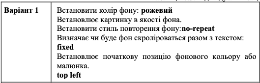

Приклад 7.1
ВІД ЗИМИ І ДО ЗИМИ.Січень січе, Лютий лютує, Березень плаче,
Квітень квітує. Травень під ноги Стелить травицю. Червень складає Сіно в копиці. Липень медовий Бджілок чарує. Серпень чудовий Булки дарує. Вересень трусить Груші в садочку. Жовтень гаптує Клену сорочку. Йде листопад,Застеля килими. Грудень надходить —Початок зими. Ф. Петров
Індивідуальне завдання . Варіант 1.

Ромашка – це трав’яниста рослина, що належить до сімейства Asteraceae.
Ця рослина походить з Європи, Азії та Північної Африки, але сьогодні її можна зустріти у всьому світі.
Ромашка квітує з червня по липень.
З великої кількості ромашкових видів люди культивують і використовують лише два види: римський і німецький.
Ці два типи ромашки відрізняються за розміром, типом квітки та листя, а також типом і кількістю сполук, які можна отримати з рослини.
З такою квіткою як ромашка пов’язана маса легенд, на цьому квітку ворожили, його дарували коханим людям, серед народу
ромашка асоціюється з символом краси і чистоти. Назва цієї квітки походить від фрази «романова трава», а якщо дивитися ще глибше, то назва походить з слова «romana», що в перекладі з польської мови означає «римська».
У будинку, де траплялося лихо (хвороба, травма або будь-яке інше потрясіння організму людини) прийнято було ставити поруч з ліжком квіти ромашки.
Вважалося, що вона здатна заспокоїти «душу» і налаштувати «розум» на позитивне мислення.
У багатьох країнах світу «ромашка» стоїть на першому місці серед інших квітів, як рослина, на якій ворожать.
Згадайте себе і своїх друзів в дитинстві. Якщо Ви не гадали, тоді, принаймні, повинні були чути про це неодноразово.
назад на домашню сторінку